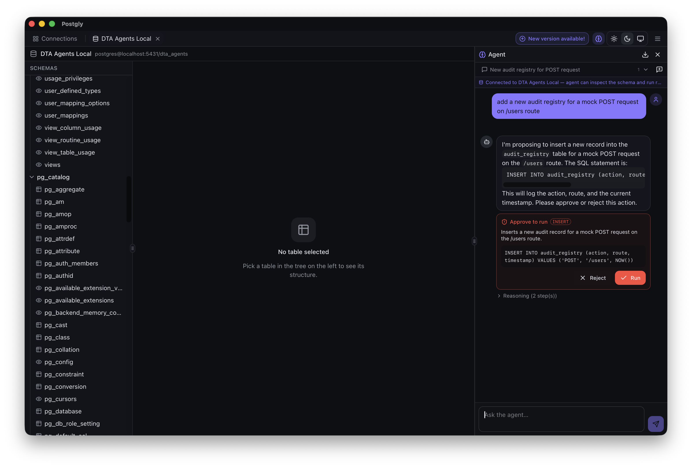
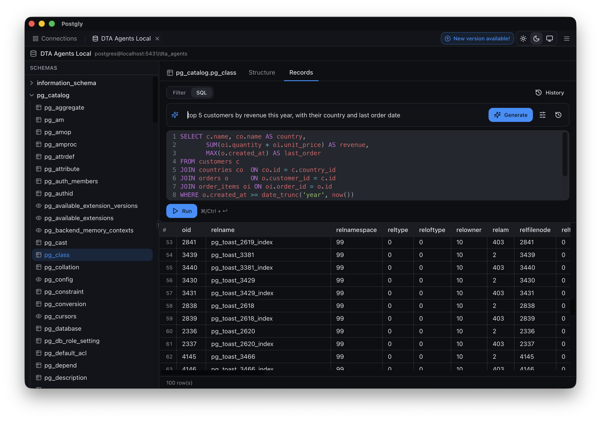
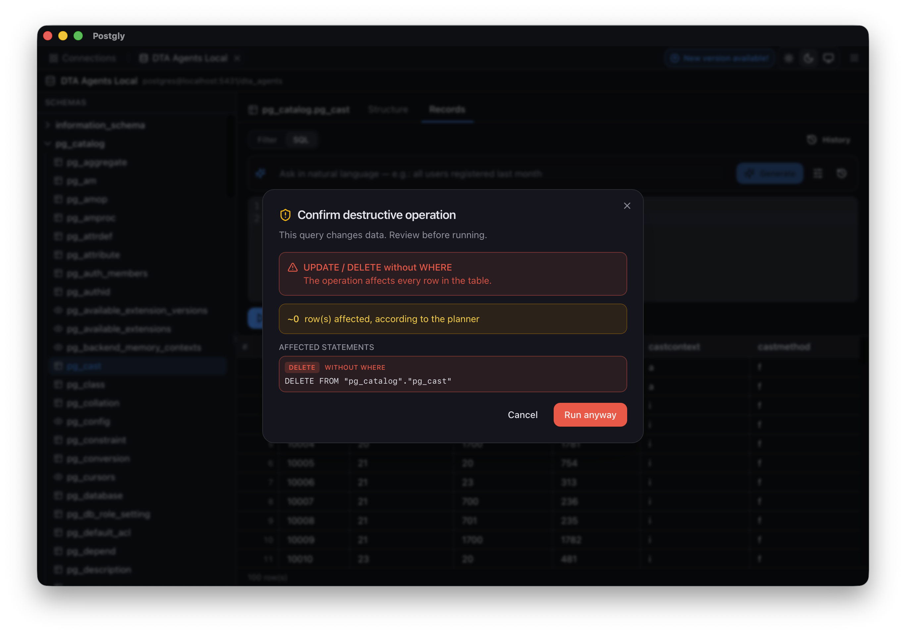
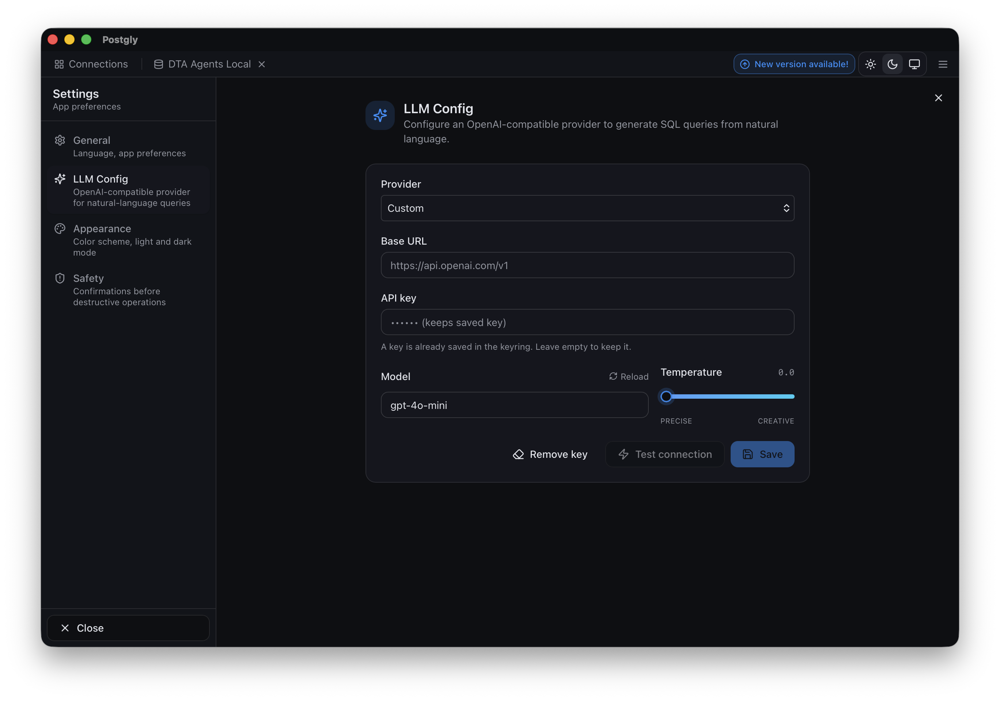

Multiple connections, multiple tabs
Manage every database from one window. Each connection lives in its own tab — switch instantly with Cmd/Ctrl+1–9.
Postgly is a modern, local-first desktop client for PostgreSQL — with a built-in natural-language SQL assistant. Describe what you want, get a safe, schema-aware query back. You decide when it runs.
Postgly's agent inspects your live schema with real tool calls
(list_tables, describe_table, list_relations,
sample_rows) before answering — no hallucinated tables, no fake columns.
Joins are planned for you from real foreign keys.
"all users registered last month"
SELECT * FROM public.users WHERE created_at >= date_trunc('month', now() - interval '1 month') AND created_at < date_trunc('month', now());
"top 5 customers by revenue this year, with their country and last order date"
SELECT c.name, co.name AS country, SUM(oi.quantity * oi.unit_price) AS revenue, MAX(o.created_at) AS last_order FROM customers c JOIN countries co ON co.id = c.country_id JOIN orders o ON o.customer_id = c.id JOIN order_items oi ON oi.order_id = o.id WHERE o.created_at >= date_trunc('year', now()) AND o.status = 'paid' GROUP BY c.name, co.name ORDER BY revenue DESC LIMIT 5;
Any OpenAI-compatible endpoint — OpenAI, Ollama (local), Groq, Together, custom proxies. Your API key lives in the OS keyring.
INSERT / UPDATE / DELETE / DROP trigger a confirmation modal with the planner's row estimate via EXPLAIN. Toggleable.
Keep context across turns with Refine, browse session history, see live token usage. Nothing runs until you hit play.
When the model can't answer, it returns need_info or not_found with reasons and clickable fuzzy table matches.
Manage every database from one window. Each connection lives in its own tab — switch instantly with Cmd/Ctrl+1–9.
Browse schemas, tables and views. Inspect column types, indexes, PKs and FKs at a glance.
Quick-filter, sort by any column, paginated browsing. JSON / JSONB columns open in a dedicated viewer.
Row-level edits inline. Insert and delete with confirmation. JSON-friendly editors built in.
Run only the selected statement. Per-session command history. Cmd/Ctrl+Enter to execute.
Connection passwords and LLM API keys live in the OS keyring — never on disk in plain text. No telemetry.
Follows your system by default. Crisp typography on retina, designed for long sessions.
Built with Tauri 2 + Rust. A tiny installer, snappy startup, and minimal memory footprint.




Installers are currently unsigned — first-launch warnings on macOS and Windows are expected. See the platform notes below.
Apple Silicon & Intel
.dmg, drag Postgly.app into /Applications.xattr -cr /Applications/Postgly.appWindows 10 / 11 · x64
x86_64
AppImage
chmod +x Postgly-linux-x86_64.AppImage
./Postgly-linux-x86_64.AppImageDebian / Ubuntu
sudo dpkg -i Postgly-linux-amd64.deb
sudo apt-get install -fAll builds available on the Releases page.
Yes. Postgly is free to download and use. The source is published on GitHub.
No. Postgly is local-first — connection metadata is stored in your app config folder, and passwords + LLM API keys live in the OS keyring. The only outbound traffic is whatever LLM endpoint you configure for the AI assistant.
No. The assistant talks to any OpenAI-compatible endpoint. You can point it at a local Ollama install and run everything offline, or use OpenAI, Groq, Together, or a custom proxy.
No. Destructive statements (INSERT, UPDATE, DELETE, DROP, TRUNCATE, ALTER, CREATE) are intercepted before execution. You see the SQL, a row-estimate via EXPLAIN, and must confirm. Nothing runs until you press play.
PostgreSQL today. The backend is engine-agnostic — there's a single DatabaseDriver trait — so MySQL and SQLite are natural next steps.
The installers aren't yet signed/notarized. macOS needs xattr -cr /Applications/Postgly.app once; on Windows click More info → Run anyway in SmartScreen. Code signing is planned.
Open-source. Local-first. AI-powered when you want it.
{kind=link}
{kind=link}
{kind=link}
{kind=link}